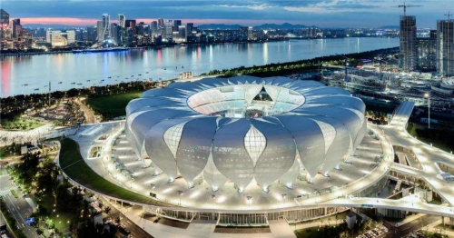
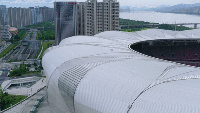
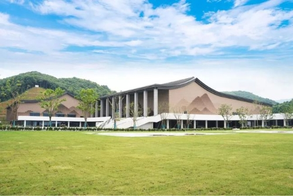
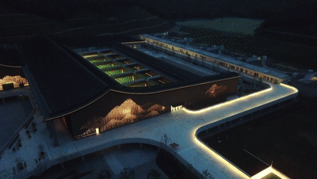
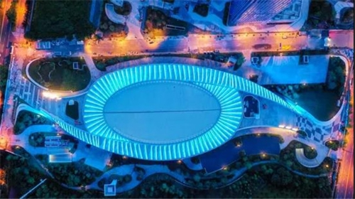
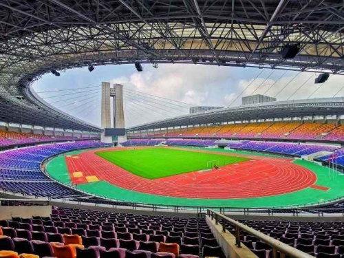

杭州亚运会欢迎您！
杭州亚运会欢迎您！
杭州亚运会开幕倒计时
2022
103
9
9
9

杭州奥体中心体育场

位于钱塘江畔的杭州奥体中心体育场，也是大家熟知的“大莲花”。届时，将承办杭州亚运会开、闭幕式和田径项目比赛，以及杭州亚残运会开、闭幕式。

富阳银湖体育中心

场馆整体设计融合富阳特色，带有飞檐的射击综合馆富有江南水乡风格，别有一番柔和韵味。

钱塘轮滑中心
钱塘轮滑中心位于钱塘区东部湾总部基地,从高空俯瞰，场馆就像两个“6”融合叠加，也像一个“旋风陀螺”。

黄龙体育中心
全新改造提升的黄龙体育中心将打造运动休闲综合体、文体培训大本营、竞赛表演集聚区、场馆运营新典范、体育消费新场景.